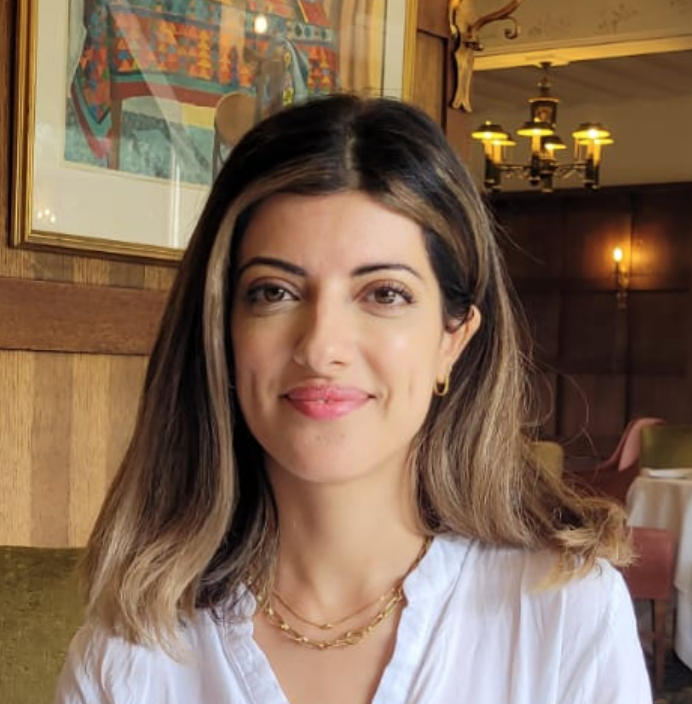

Hamaseh Dasturyan

Sales Executive
Brigthon
hdfrad@outlook.com
07895599190
www.hamasehdasturyan.com
Motivated and driven graduate of 2D and 3D VFX with a professional background in sales.
I am looking to develop my self taught technical skills in the tech industry.
Work Experience
Sales Executive
Butternut Box - Sales executive
October 2021 to Present
- Servicing existing accounts, obtaining orders and establishing new accounts
- Meeting customer needs
- Selling product add ons
- Maintaining positive business relationships to ensure future sales
Sales Executive
Global Acquisitions Group Limited - London
December 2018 to August 2021
- Responsible for acquiring new customers through inbound and outbound inquires
- Reaching out to potential customers delivered a sales presentation with passion, commitment, courtesy and professionalism
- Negotiated the purchase terms and contract
- Designed company leaflet
- Organised meetings for the company and customers
Hostess/Receptionist
Joe Fortes Seafood and Chophouse - Vancouver, BC
March 2016 to September 2018
- Welcomed customers with positive and genuine attitude
- Conducted a friendly atmosphere
- Kept patient and stayed polite in stressful situations
- Ensured any arrivals requested were communicated with the relevant person and carried professionally out
- Build genuine rapport with customers
2D Artist
Glassworks - London
March 2012 to June 2015
- Generated mattes by roto-scoping and luminance, difference and colour keying
- Produced composites by combining live action elements and computer generated imagery
- Integrated rear projection into background images
Education
| Course |
School/University |
Dates |
| Higher Education Visual Effects Production |
Escape Studios |
January 2011 to March 2011 |
| BA Visual Effects Production |
University of West London |
September 2007 to June 2010 |